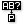

 Replace Paths
Component Index > Sets > Tree > Replace Paths
Find & replace paths in a data tree. This component support Path Masks, which are lines of text that represent allowed and disallowed path indices. Masks can support both single digits,
digit ranges, digits groups and wildcards. Masks consists of alternating index qualifiers and index separators. Separators must be commas or semi-colons.
Inputs
| Name | ID | Description | Type |
|---|---|---|---|
| D | Data stream to process | Generic Data | |
| S | Search masks | Text | |
| R | Respective replacement paths | Path |
Outputs
| Name | ID | Description | Type |
|---|---|---|---|
| D | Processed tree data | Generic Data |
Copyright © 2016 Robert McNeel & Associates.